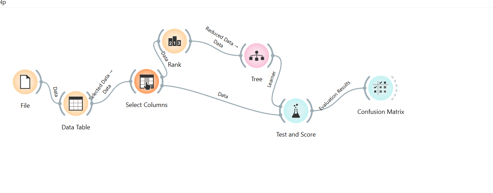
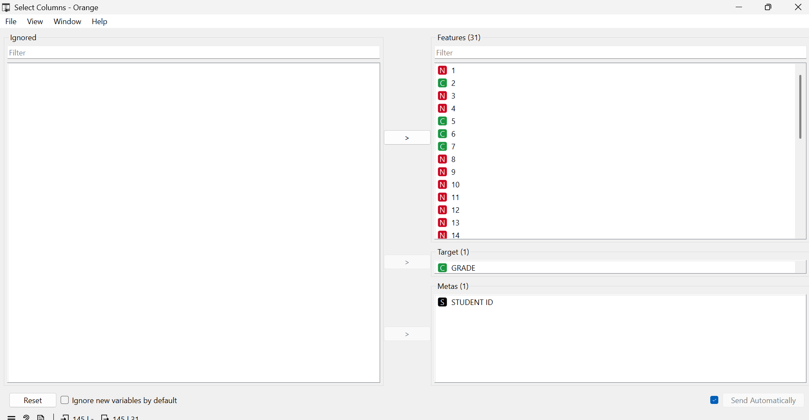
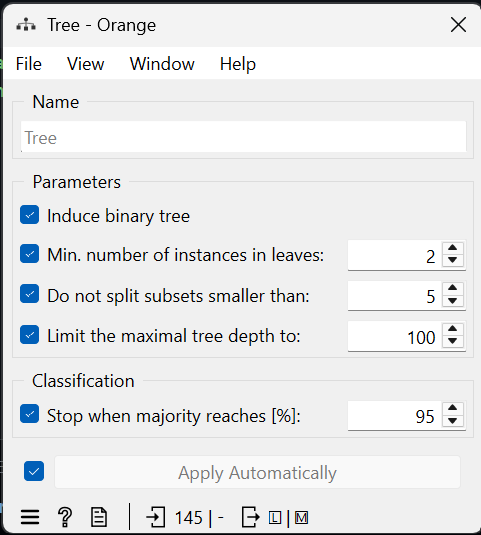
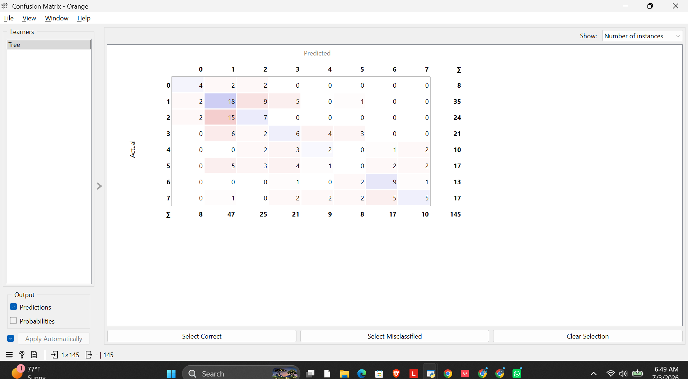

Implementasi Decision Tree Menggunakan Orange#
Dataset#
Dataset yang digunakan merupakan data nilai mahasiswa yang terdiri dari 145 data dengan 31 atribut sebagai fitur (Features). Variabel GRADE dijadikan sebagai target (class) yang akan diprediksi, sedangkan STUDENT ID dijadikan sebagai metadata sehingga tidak digunakan dalam proses pelatihan model.
Workflow Orange#
Tahapan pengolahan data pada Orange dilakukan menggunakan workflow berikut.
{kind=link}

Fig. 1 Workflow proses klasifikasi menggunakan Orange.#
Penjelasan#
Workflow dimulai dengan membaca dataset menggunakan widget File. Data kemudian ditampilkan menggunakan Data Table untuk memastikan dataset berhasil dimuat.
Selanjutnya digunakan widget Select Columns untuk menentukan atribut yang akan digunakan sebagai fitur, target, dan metadata.
Data yang telah dipilih kemudian diproses menggunakan algoritma Decision Tree. Setelah model terbentuk, dilakukan evaluasi menggunakan widget Test and Score dengan metode 5-Fold Cross Validation. Hasil evaluasi kemudian dianalisis lebih lanjut menggunakan Confusion Matrix.
Select Columns#
{kind=link}

Fig. 2 Pengaturan atribut pada widget Select Columns.#
Penjelasan#
Pada tahap ini dilakukan pemilihan atribut yang akan digunakan dalam proses klasifikasi.
Pengaturan yang digunakan adalah sebagai berikut:
Features : 31 atribut
Target : GRADE
Meta : STUDENT ID
Atribut GRADE dipilih sebagai target karena merupakan kelas yang ingin diprediksi oleh model Decision Tree. Sementara itu, STUDENT ID hanya digunakan sebagai identitas sehingga tidak mempengaruhi proses pembelajaran model.
Parameter Decision Tree#
{kind=link}

Fig. 3 Parameter Decision Tree pada Orange.#
Penjelasan#
Model Decision Tree menggunakan parameter sebagai berikut.
Parameter |
Nilai |
|---|---|
Induce binary tree |
Aktif |
Minimum instances in leaves |
2 |
Do not split subsets smaller than |
5 |
Maximum tree depth |
100 |
Stop when majority reaches |
95% |
Parameter tersebut dipilih agar pohon keputusan dapat membentuk aturan klasifikasi tanpa menghasilkan percabangan yang terlalu kompleks.
Evaluasi Model#
Evaluasi dilakukan menggunakan metode 5-Fold Cross Validation.

Fig. 4 Hasil evaluasi menggunakan Test and Score.#
Hasil Evaluasi#
Metrik |
Nilai |
|---|---|
AUC |
0.651 |
Accuracy (CA) |
0.352 |
F1 Score |
0.334 |
Precision |
0.329 |
Recall |
0.352 |
MCC |
0.230 |
Penjelasan#
Berdasarkan hasil pengujian, model memperoleh nilai Accuracy sebesar 35,2%. Nilai ini menunjukkan bahwa sekitar sepertiga data berhasil diklasifikasikan dengan benar.
Nilai AUC sebesar 0.651 menunjukkan kemampuan model dalam membedakan kelas masih berada pada kategori sedang. Nilai Precision, Recall, dan F1 Score yang relatif rendah menunjukkan bahwa model masih mengalami kesalahan klasifikasi pada beberapa kelas.
Confusion Matrix#
{kind=link}

Fig. 5 Confusion Matrix hasil klasifikasi Decision Tree.#
Penjelasan#
Confusion Matrix menunjukkan jumlah prediksi yang benar maupun salah pada setiap kelas.
Nilai yang berada pada diagonal utama menunjukkan jumlah prediksi yang benar (True Prediction), sedangkan nilai di luar diagonal menunjukkan kesalahan klasifikasi (Misclassification).
Terlihat bahwa beberapa kelas memiliki tingkat prediksi yang cukup baik, sementara kelas lainnya masih sering tertukar dengan kelas yang berdekatan. Hal ini menunjukkan bahwa model Decision Tree masih memiliki keterbatasan dalam membedakan seluruh kategori nilai secara akurat.
Kesimpulan#
Berdasarkan hasil pengujian menggunakan algoritma Decision Tree, diperoleh nilai Accuracy sebesar 35,2% dan nilai AUC sebesar 0.651.
Model telah mampu melakukan proses klasifikasi terhadap data mahasiswa, namun performanya masih tergolong rendah. Hal ini terlihat dari nilai Accuracy, Precision, Recall, dan F1 Score yang masih berada di bawah 0.4.